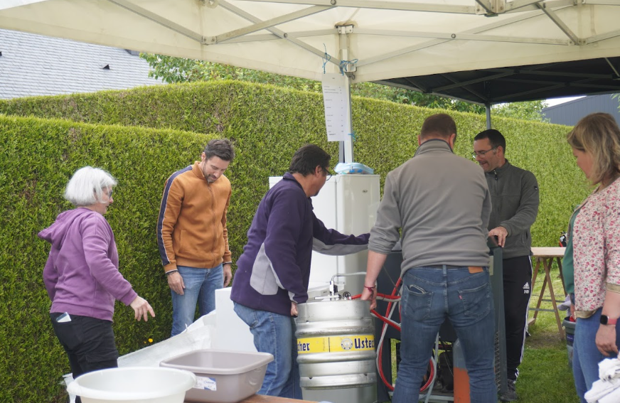

Sonorisation
Installation, balances, mixage façade et retours : l’équipe veille au bon déroulement technique de chaque passage sur scène.
Musik’Avel existe grâce à l’énergie des bénévoles, au travail de l’équipe technique et au soutien de nos partenaires locaux.
Nos bénévoles
Chaque édition de Musik’Avel est avant tout une aventure humaine rendue possible grâce à l’engagement de nos bénévoles. Tout au long de l’année, ils donnent de leur temps, de leur énergie et mettent leurs compétences au service du festival.
Organisation, logistique, accueil, restauration, communication, montage, démontage : chaque coup de main compte. Sans leur implication et leur bonne humeur, cet événement ne pourrait tout simplement pas exister.
Merci à toutes celles et ceux qui participent à faire de Musik’Avel un moment convivial, festif et accessible à tous.

Son & lumière
Grâce à plusieurs années d'expérience dans la sonorisation, l'éclairage et l'organisation de concerts, Mic-Mac est devenu bien plus qu'un simple groupe de musique. L'association s'est également constituée en une véritable équipe technique, accompagnant les artistes accueillis sur différents événements afin de leur permettre de se produire dans les meilleures conditions et d'offrir au public une expérience musicale de qualité.
Installation, balances, mixage façade et retours : l’équipe veille au bon déroulement technique de chaque passage sur scène.
Mise en ambiance, éclairage de scène et effets visuels accompagnent les concerts pour renforcer l’énergie du festival.
Montage du plateau, câblage, sécurité et coordination technique sont préparés en amont pour que la soirée se déroule au mieux.
Nos partenaires
Le festival est porté par l’association Mic-Mac et soutenu par la commune de Brécé. Merci à nos partenaires pour leur confiance et leur aide précieuse.